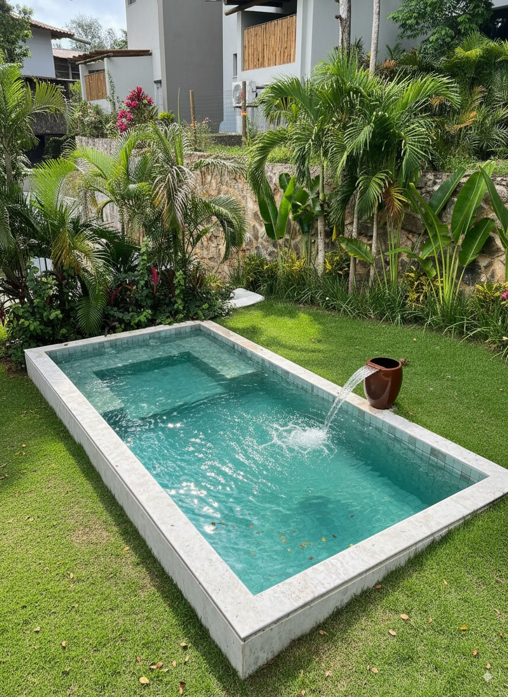

Orientação antes da compra
Ajuda para entender espaço, modelo, uso da família e o melhor caminho para sair do desejo para o orçamento.

Piscinas e áreas de lazer em Camaçari-BA
Instalação de piscinas e spas em Camaçari-BA, com atendimento próximo, orientação técnica e soluções para transformar sua casa em um espaço de lazer.
A Linha Verde Spas e Piscinas atende clientes em Camaçari, Salvador, Lauro de Freitas, Simões Filho, Candeias e Mata de São João, desenvolvendo projetos personalizados de piscinas, spas e áreas de lazer. Trabalhamos com instalação, acabamento e criação de ambientes sofisticados para transformar sua residência em um verdadeiro espaço de lazer.
Piscinas compactas, familiares e áreas de lazer completas para diferentes tamanhos de quintal.


Ajuda para entender espaço, modelo, uso da família e o melhor caminho para sair do desejo para o orçamento.
Soluções para áreas compactas, casas familiares e projetos com acabamento mais sofisticado.
Comunicação direta pelo WhatsApp, sem enrolação e com linguagem simples para quem quer comprar com confiança.
Conte sua ideia, cidade, medidas aproximadas e envie fotos do espaço.
A equipe analisa o perfil da área e indica possibilidades de piscina, spa ou acabamento.
Você entende opções, valores e próximos passos antes de decidir.
Depois da instalação, sua casa ganha um novo ponto de encontro para família e amigos.

Seja para reunir os filhos, receber amigos, brincar com os netos ou simplesmente relaxar no fim do dia, a área de lazer valoriza sua rotina e cria memórias dentro da própria casa.
Conversar sobre meu espaçoNossa equipe atende projetos de piscinas e spas em:
Sim. A Linha Verde Spas e Piscinas atende Salvador e toda a Região Metropolitana.
Sim. Camaçari é uma das principais áreas de atuação da empresa.
Sim. Realizamos projetos de piscinas e spas em Lauro de Freitas.
Sim. Atendemos clientes residenciais e comerciais em Simões Filho.
Sim. Desenvolvemos projetos completos para clientes de Candeias.
Sim. Atendemos Mata de São João e região com projetos personalizados.
O valor depende do tamanho, acabamento e acessórios. Solicite um orçamento personalizado.
Sim. Trabalhamos com spas residenciais e áreas de lazer completas.
Linha Verde Spas e Piscinas
Envie uma mensagem agora e receba orientação para escolher a melhor opção para seu espaço.
Chamar no WhatsApp